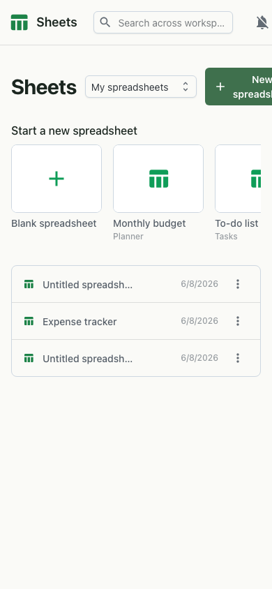

Overview
Sheets is a full-featured spreadsheet you and your team can edit together in real time. Behind the grid is a deep formula engine plus the analysis tools you expect — validation, conditional formatting, charts and pivot tables — so you can go from a list of numbers to a finished report without leaving the workspace. Start from blank or a ready-made template.

